ggchangepoint: A Unified Tidy Interface for Changepoint Analysis in R
Youzhi
Yu
University of Chicago
Source: vignettes/introduction.Rmd
introduction.RmdAbstract
ggchangepoint provides a unified, tidy interface to
changepoint detection across the methodological spectrum. It introduces
a single S3 result class, ggcpt, with
broom-style methods (tidy(),
glance(), augment()) (Robinson 2017), a central dispatcher
cpt_detect() covering 31 detection methods across six
algorithmic families, and native ggplot2 (Wickham 2016) visualisation through
autoplot() and a set of composable geoms. Where a method
quantifies its uncertainty — the simultaneous confidence intervals of
SMUCE (Frick et al. 2014), the break-date
intervals of Bai–Perron (Bai and Perron
1998), the posterior distributions of Bayesian detectors (Barry and Hartigan 1993; Adams and MacKay 2007)
— the result object carries that uncertainty and the plotting layer can
draw it. The package further supplies a penalty-path diagnostic (CROPS),
batch detection over panels of series, bootstrap stability diagnostics,
accuracy metrics aligned with current benchmarking conventions (van den Burg and Williams
2020), ground-truth simulation, and per-method citations. This
article sets out the statistical background, the design of the package,
and each method family in turn, with worked examples throughout.
Introduction
Changepoint analysis — locating the instants at which the stochastic behaviour of an ordered sequence changes — is one of the oldest problems in statistics, dating back at least to the continuous-inspection schemes of Page (1954), and one of its most active: recent surveys catalogue dozens of methods (Truong et al. 2020; Aminikhanghahi and Cook 2017). Its applications span virtually every domain that produces sequential data, including genomics (Picard et al. 2005), finance (Athey et al. 2022), climate science (Haslett and Raftery 1989), and signal processing (Lavielle 2005).
The R ecosystem mirrors this breadth. Penalised optimal partitioning lives in changepoint (Killick and Eckley 2014) and fpop (Maidstone et al. 2017); wild binary segmentation in wbs and breakfast (Fryzlewicz 2014, 2020); multiscale inference in stepR (Frick et al. 2014); Bayesian analysis in bcp (Erdman and Emerson 2007) and ocp (Adams and MacKay 2007); structural breaks in strucchange (Zeileis et al. 2002); and so on. Each of these packages is excellent at what it does, and each returns a different object, follows a different indexing convention, and draws (or does not draw) its own plots.
An analyst who wants to compare a PELT segmentation with a Bayesian posterior and a multiscale confidence set — a routine task in applied work — must therefore learn several APIs, reconcile several conventions, and write custom plotting code for each. ggchangepoint removes that friction. Its design goals are:
-
One vocabulary. A single front door,
cpt_detect(x, method, change_in, penalty, ...), whose arguments mean the same thing for every engine. -
One result type. Every detector returns a
ggcptobject with a stable tidy contract, whatever the upstream engine returned. -
One rendering path. Every result — point estimates,
confidence intervals, fitted signals, posteriors, penalty paths — draws
with
autoplot()and extends with ordinaryggplot2layers. -
Wrap, don’t reinvent. All detection is delegated to
the peer-reviewed upstream engines; optional engines live in
Suggestsand are loaded only when requested.
The changepoint problem
Let be an ordered sequence. A segmentation with changepoints is an ordered set satisfying , which partitions the data into the segments , . Both the number of changepoints and their locations are unknown, and estimating them jointly is what makes the problem hard. Throughout the package a changepoint is reported as the last index of the left segment (the convention of the changepoint package), so the admissible locations are ; results from engines using the opposite convention are shifted on the way in, and the convention is recorded on every result object.
Penalised cost minimisation
The classical formulation chooses the segmentation minimising a penalised cost, where is a segment cost — for a change in mean under Gaussian noise the residual sum of squares, more generally twice the negative maximised log-likelihood of the segment — and is the price of each additional changepoint. Writing for the number of parameters a changepoint introduces, the familiar choices are (AIC) and (BIC, or SIC in the changepoint literature) (Yao 1988), alongside the strengthened and modified variants discussed below. Solved naively by dynamic programming, the minimisation costs ; PELT (Killick et al. 2012) prunes candidate changepoints to reach linear expected cost while remaining exact, and FPOP (Maidstone et al. 2017) reaches comparable speed by functional pruning.
A practical consequence of writing the objective this way is easy to
miss:
and
must live on the same scale. For a change in mean the
changepoint engines evaluate the Normal cost with the
noise standard deviation fixed at 1, and fpop penalises
the residual sum of squares directly, so multiplying the data by a
constant multiplies the cost while leaving
untouched. On a single changepoint whose jump is five standard
deviations, pelt recovers exactly one changepoint at
but returns 29 at
and 138 at
.
Standardise the series, pass a penalty on the data’s own scale (say
2 * log(n) * var(diff(x)) / 2), or use
change_in = "meanvar", which estimates a variance per
segment. Methods that estimate the noise level as part of their
procedure — SMUCE, the WBS family, CPOP, DeCAFS, and the Bayesian and
nonparametric engines — return the same segmentation whatever the
units.
Search-based and multiscale methods
A complementary family locates changepoints by scanning test statistics. Binary segmentation (Scott and Knott 1974; Vostrikova 1981) recursively splits the series at the maximal CUSUM statistic; wild binary segmentation (Fryzlewicz 2014) and its successor WBS2 (Fryzlewicz 2020) draw random subintervals so that short segments are not masked; narrowest-over-threshold (NOT) (Baranowski et al. 2019) favours the narrowest interval on which the contrast exceeds a threshold, which generalises cleanly to changes in slope; MOSUM (Eichinger and Kirch 2018) scans a moving-sum statistic at a fixed bandwidth, or across a range of bandwidths; Isolate–Detect (Anastasiou and Fryzlewicz 2022) isolates each changepoint in an expanding interval; and TGUH (Fryzlewicz 2018) performs a tail-greedy bottom-up merge. SMUCE (Frick et al. 2014) occupies a special place: it estimates the step function with the fewest jumps that still passes a simultaneous multiscale test at level , and in doing so delivers confidence intervals for every changepoint location — uncertainty statements most competitors cannot make. HSMUCE (Pein et al. 2017) extends this to heterogeneous noise.
Beyond the mean
Changes need not be in the mean: the change_in argument
accepts "mean", "var", "meanvar",
"slope", and "distribution". Nonparametric
engines (energy statistics (Matteson and James
2014), nonparametric cost functions (Haynes et al. 2017), kernel running statistics
(Arlot et al. 2019; Cabrieto et al. 2018),
joint characteristic functions (McGonigle and Cho
2025), self-normalisation (Zhao et al.
2022)) detect distributional change without likelihood
assumptions; Bayesian engines (Barry and Hartigan
1993; Adams and MacKay 2007; Zhao et al.
2019) return posteriors instead of point sets; high-dimensional
engines (Wang and Samworth 2018; Chen et al.
2022; Grundy et al. 2020) aggregate evidence across coordinates;
and regression engines (Bai and Perron 1998;
Muggeo 2003) date breaks in model coefficients. The tour below
visits each family with runnable code.
Design of the package
The ggcpt result contract
Every detector returns an object of class ggcpt
containing:
-
changepoints: a tibble with one row per changepoint. Columnscp(location, “left” convention) andcp_value(the data value atcp) are always present; engines addci_lower/ci_upper(SMUCE, HSMUCE, strucchange, segmented),posterior_prob(bcp, BEAST),detection_time(CPM),strength(inspect),declared_at(ocd), ormapping(geomcp) when they have more to say. -
segments: a tibble of the induced segments (seg_id,start,end,n,param_estimate). -
data: the analysed series as a tibble (index,value), plus afittedcolumn when the engine estimates a signal (SMUCE, DeCAFS, CPOP, segmented, bcp, BEAST). -
method,change_in,penalty(alist(type, value)descriptor),cp_convention(always"left"),runtime(elapsed seconds, timed bycpt_detect()andNAwhen a wrapper is called directly), andfit(the untouched upstream object, for experts).
Multivariate results additionally carry a data_wide
tibble with one column per coordinate, which autoplot()
renders as faceted small-multiples.
Tidy methods and the plotting layer
The class implements the full complement of generics R users expect:
set.seed(2022)
x <- c(rnorm(100, 0, 1), rnorm(100, 10, 1))
res <- cpt_detect(x, method = "pelt", change_in = "mean")
res
#> ggcpt (changepoint detection result)
#> Method: pelt
#> Change in: mean
#> Changepoints found: 1
#> CP convention: left
#> Penalty: MBIC
#> Series length: 200
#>
#> Changepoints:
#> # A tibble: 1 × 2
#> cp cp_value
#> <int> <dbl>
#> 1 100 0.467
tidy(res)
#> # A tibble: 1 × 2
#> cp cp_value
#> <int> <dbl>
#> 1 100 0.467
glance(res)
#> # A tibble: 1 × 9
#> n n_changepoints method change_in penalty_type penalty_value cp_convention
#> <int> <int> <chr> <chr> <chr> <dbl> <chr>
#> 1 200 1 pelt mean MBIC NA left
#> # ℹ 2 more variables: total_cost <dbl>, runtime <dbl>
head(augment(res))
#> # A tibble: 6 × 6
#> index value seg_id .fitted .resid is_changepoint
#> <int> <dbl> <int> <dbl> <dbl> <lgl>
#> 1 1 0.900 1 0.139 0.761 FALSE
#> 2 2 -1.17 1 0.139 -1.31 FALSE
#> 3 3 -0.897 1 0.139 -1.04 FALSE
#> 4 4 -1.44 1 0.139 -1.58 FALSE
#> 5 5 -0.331 1 0.139 -0.470 FALSE
#> 6 6 -2.90 1 0.139 -3.04 FALSEautoplot() draws the series, the changepoint rules, and
— on request — the fitted segment means (show_segments),
the engine’s fitted signal (show_fit), and
changepoint-location confidence intervals (show_ci):
autoplot(res, show_segments = TRUE)Composable layers (geom_changepoint(),
geom_cpt_segment(), geom_cpt_ci(),
stat_changepoint()), a theme (theme_ggcpt()),
and segment shading (annotate_segments()) let the same
results be built into bespoke graphics; summary(),
as_tibble(), as.data.frame(),
format(), and plot() complete the S3
surface.
Design principles
The four goals above are recorded in the package as principles
P1 — wrap, don’t reinvent (bind to peer-reviewed CRAN
engines), P2 — tidy in, tidy out (stable column names
across all methods), P3 — ggplot2 all the way down
(every result renders and extends), and P4 — one
vocabulary (x, method,
change_in, penalty, ...). Three
further principles govern how the interface evolves:
-
P5 — Progressive disclosure: beginners call
cpt_detect()+autoplot(); experts reach the upstream fit via$fit. - P6 — No surprises: the 0.1.0 functions still work unchanged.
- P7 — Document everything you ship: every export is introduced in the README and a vignette.
Release 0.4.0 adds an eighth: P8 — carry the
uncertainty. Where a method quantifies uncertainty, the
ggcpt object records it and autoplot() can
draw it.
The unified dispatcher
cpt_detect() dispatches by method name;
cpt_methods() reports every method the package knows, its
engine, what it can detect, and whether the engine is installed:
cpt_methods()
#> # A tibble: 35 × 6
#> method change_in engine status target_release installed
#> <chr> <chr> <chr> <chr> <chr> <lgl>
#> 1 pelt mean, var, meanvar changep… avail… NA TRUE
#> 2 binseg mean, var, meanvar changep… avail… NA TRUE
#> 3 segneigh mean, var, meanvar changep… avail… NA TRUE
#> 4 amoc mean, var, meanvar changep… avail… NA TRUE
#> 5 np distribution changep… avail… NA TRUE
#> 6 ecp distribution (multivariate) ecp avail… NA TRUE
#> 7 fpop mean fpop avail… NA TRUE
#> 8 wbs mean wbs avail… NA TRUE
#> 9 wbs2 mean breakfa… avail… NA TRUE
#> 10 not mean, var, slope not avail… NA TRUE
#> # ℹ 25 more rowsRequests are validated against this capability matrix: asking a mean-only engine for a variance change is an error with the legal alternatives named — never a silent substitution. Univariate methods likewise refuse multi-column input rather than flattening it.
Penalty semantics differ across engines, and
cpt_penalty() documents and constructs the standard
values:
cpt_penalty("BIC", n = 200)
#> [1] 5.298317
cpt_penalty("MBIC", n = 200)
#> [1] 10.59663
cpt_penalty("Hannan-Quinn", n = 200)
#> [1] 3.334779
cpt_penalty("sSIC", n = 200)
#> [1] 5.387402Two of these warrant a word. "sSIC" is the strengthened
Schwarz criterion
,
with
by default (Fryzlewicz 2014) — marginally
heavier than BIC, and the criterion the search-based engines apply
internally. "MBIC" in cpt_penalty() returns
:
a BIC-type term plus the combinatorial cost of placing
changepoints among
observations. It is deliberately stronger than "BIC", but
it is not the modified BIC of Zhang and Siegmund (2007), whose
penalty
depends on the segment lengths
and therefore cannot be written as a function of
and
alone; nor is it the quantity the changepoint package
computes for its own character penalty "MBIC".
Character penalties ("MBIC", "BIC", …) pass
through to the changepoint-family engines natively and are
resolved to numeric values for the functional-pruning engines
(fpop, cpop, decafs).
Search-based engines (WBS, NOT, MOSUM, …) select their own models and
ignore the argument, as do the engines tuned by a significance level, a
posterior-probability threshold, or an average run length (SMUCE, bcp,
BEAST, CPM, SNSeg).
A tour of the method families
Throughout we use simulated series with known truth, so that results
can be checked by eye. cpt_simulate() draws series with
prescribed changepoints, and five canonical test signals ship as
ready-made generators: signal_blocks() (the
Donoho–Johnstone blocks signal (Donoho and
Johnstone 1994)), signal_fms(),
signal_teeth(), signal_stairs(), and
signal_mix(). The comparison vignette puts them to work.
The sections that follow work through six families — penalised and
optimal partitioning, multiscale and search, Bayesian, nonparametric and
sequential, multivariate and high-dimensional, and regression-based —
plus two concerns that cut across all of them: change in slope, and
robustness to drift, autocorrelation and model ambiguity.
set.seed(2026)
x_mean <- c(rnorm(100), rnorm(100, 4)) # mean shift at 100
x_multi <- c(rnorm(100), rnorm(100, 3), rnorm(100, -1)) # shifts at 100, 200
x_slope <- cumsum(c(rep(0.4, 100), rep(-0.3, 100))) + rnorm(200) # kink at 100Penalised and optimal partitioning
PELT (Killick et al. 2012), binary segmentation (Scott and Knott 1974), segment neighbourhoods (Auger and Lawrence, 1989), and at-most-one-change (AMOC; Hinkley, 1970) come from the changepoint package (Killick and Eckley 2014); FPOP (Maidstone et al. 2017) from fpop:
tidy(cpt_detect(x_multi, method = "pelt"))
#> # A tibble: 2 × 2
#> cp cp_value
#> <int> <dbl>
#> 1 100 -0.100
#> 2 200 1.90
tidy(cpt_detect(x_multi, method = "binseg"))
#> # A tibble: 2 × 2
#> cp cp_value
#> <int> <dbl>
#> 1 100 -0.100
#> 2 201 0.337
tidy(cpt_detect(x_multi, method = "fpop"))
#> # A tibble: 2 × 2
#> cp cp_value
#> <int> <dbl>
#> 1 100 -0.100
#> 2 200 1.90The Achilles heel of penalised methods is the choice of
.
Rather than committing to one value, cpt_crops() computes
every optimal segmentation as
ranges over an interval — the CROPS algorithm of Haynes, Eckley and
Fearnhead (2017), as implemented by changepoint — and
turns penalty selection into a diagnostic:
path <- cpt_crops(x_multi)
path
#> ggcpt_path (CROPS penalty path)
#> Change in: mean
#> Penalty range: [5.704, 57.04]
#> Series length: 300
#> Distinct segmentations: 5
#>
#> # A tibble: 5 × 3
#> penalty n_cpts cost
#> <dbl> <int> <dbl>
#> 1 6.69 2 327.
#> 2 6.27 5 307.
#> 3 6.19 8 288.
#> 4 5.76 9 282.
#> 5 5.70 10 276.
autoplot(path)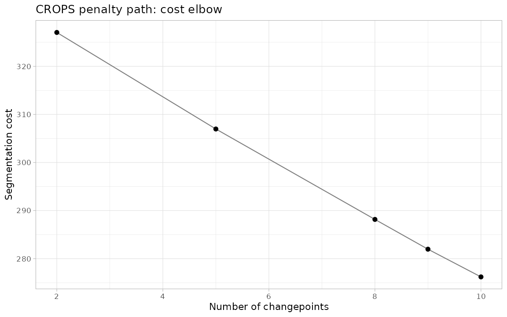
The default plot puts segmentation cost against model size, and the
usual reading takes the model beyond which the cost stops falling
appreciably. The sweep over the default interval
admits only a handful of distinct segmentations here, and the most
parsimonious of them already recovers the two true changepoints.
autoplot(path, type = "segmentations") shows the candidate
models themselves, and autoplot(path, type = "path") the
map from penalty to model size:
autoplot(path, type = "segmentations")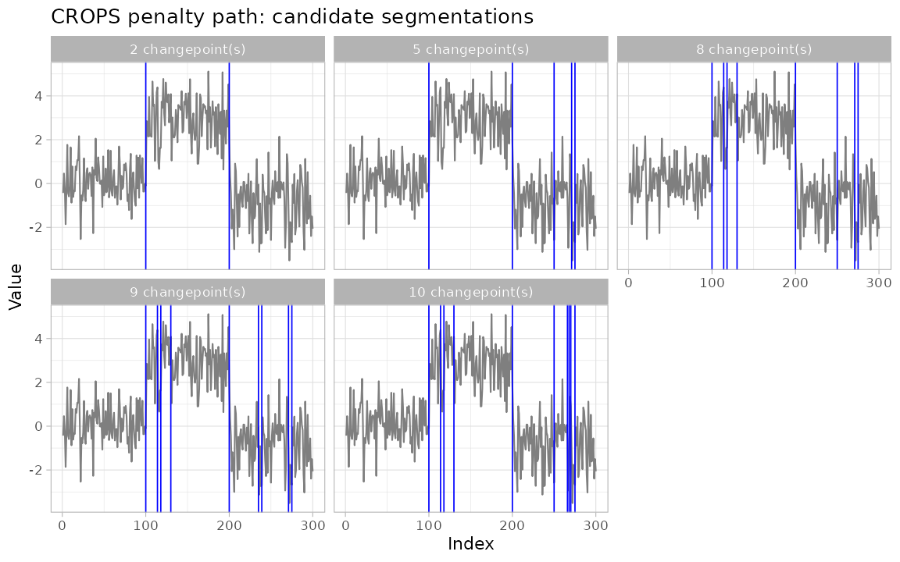
The modern fastcpd engine (Li and Zhang 2024) brings the same penalised formulation to a wide family of models — mean, variance, mean-and-variance, and AR/ARMA/GARCH model changes — with sequential-gradient-descent speed:
tidy(fastcpd_wrapper(x_multi, family = "mean"))
#> # A tibble: 2 × 2
#> cp cp_value
#> <int> <dbl>
#> 1 100 -0.100
#> 2 200 1.90Multiscale and search methods
The randomised and multiscale searchers are one call each, whether
through cpt_detect() or through the wrapper directly:
tidy(wbs_wrapper(x_multi, seed = 1))
#> # A tibble: 2 × 2
#> cp cp_value
#> <int> <dbl>
#> 1 100 -0.100
#> 2 200 1.90
tidy(not_wrapper(x_multi, seed = 1))
#> # A tibble: 2 × 2
#> cp cp_value
#> <int> <dbl>
#> 1 100 -0.100
#> 2 200 1.90
tidy(mosum_wrapper(x_multi))
#> # A tibble: 2 × 2
#> cp cp_value
#> <int> <dbl>
#> 1 100 -0.100
#> 2 200 1.90
tidy(idetect_wrapper(x_multi, seed = 1))
#> # A tibble: 2 × 2
#> cp cp_value
#> <int> <dbl>
#> 1 100 -0.100
#> 2 200 1.90
tidy(wbs2_wrapper(x_multi))
#> # A tibble: 2 × 2
#> cp cp_value
#> <int> <dbl>
#> 1 100 -0.100
#> 2 200 1.90
tidy(tguh_wrapper(x_multi))
#> # A tibble: 2 × 2
#> cp cp_value
#> <int> <dbl>
#> 1 100 -0.100
#> 2 199 4.53SMUCE (Frick et al. 2014) is the
family’s inferential flagship: its level
bounds the probability of overestimating the number of changepoints (the
default is alpha = 0.5, stepR’s own
recommendation for estimation rather than testing), and every location
comes with a confidence interval, stored in
ci_lower/ci_upper and drawn by
show_ci = TRUE as whiskers near the foot of the panel (the
step fit is drawn by show_fit = TRUE):
res_smuce <- smuce_wrapper(x_multi)
tidy(res_smuce)
#> # A tibble: 2 × 4
#> cp cp_value ci_lower ci_upper
#> <int> <dbl> <int> <int>
#> 1 100 -0.100 98 103
#> 2 200 1.90 199 202
autoplot(res_smuce, show_ci = TRUE, show_fit = TRUE)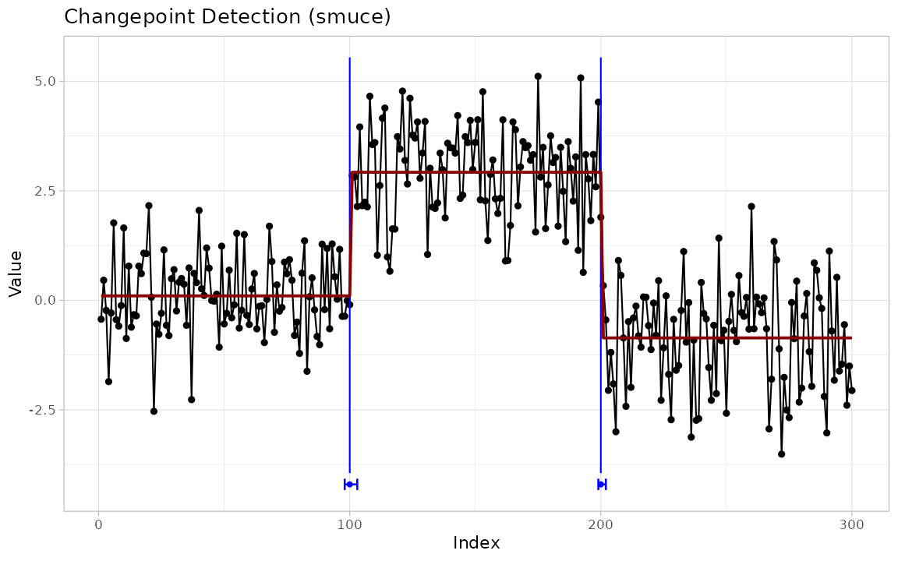
For heterogeneous noise,
smuce_wrapper(x, family = "hsmuce") (or
cpt_detect(x, method = "hsmuce")) runs HSMUCE (Pein et al. 2017).
Changes in slope
A kink in the trend is not a jump in the level, and running a mean-change detector on a trending series over-detects notoriously. CPOP (Fearnhead et al. 2019; Fearnhead and Grose 2024) solves the change-in-slope problem exactly under an penalty, returning a continuous piecewise-linear fit:
res_cpop <- cpop_wrapper(x_slope)
tidy(res_cpop)
#> # A tibble: 1 × 2
#> cp cp_value
#> <int> <dbl>
#> 1 100 38.6
autoplot(res_cpop, show_fit = TRUE)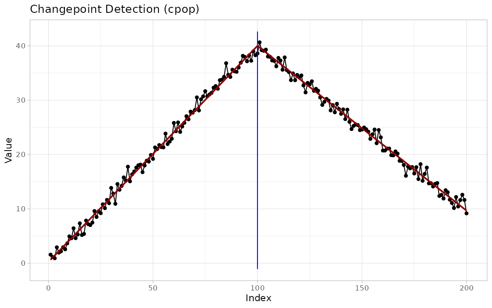
NOT with its linear contrast (Baranowski et
al. 2019) offers a search-based alternative; the dispatcher
routes cpt_detect(x, method = "not", change_in = "slope")
to it automatically:
tidy(cpt_detect(x_slope, method = "not", change_in = "slope"))
#> # A tibble: 2 × 2
#> cp cp_value
#> <int> <dbl>
#> 1 85 36.8
#> 2 101 40.7Bayesian detection
The Barry–Hartigan product partition model (Barry and Hartigan 1993), via the
bcp package (Erdman and Emerson
2007), returns a posterior probability of a changepoint at
every location along with posterior segment means. Locations
clearing prob_threshold populate the changepoints tibble
(with their probabilities), and ggcpt_posterior() draws the
classic two-panel display:
res_bcp <- bcp_wrapper(x_mean, seed = 2026)
tidy(res_bcp)
#> # A tibble: 1 × 3
#> cp cp_value posterior_prob
#> <int> <dbl> <dbl>
#> 1 100 0.369 1
ggcpt_posterior(res_bcp)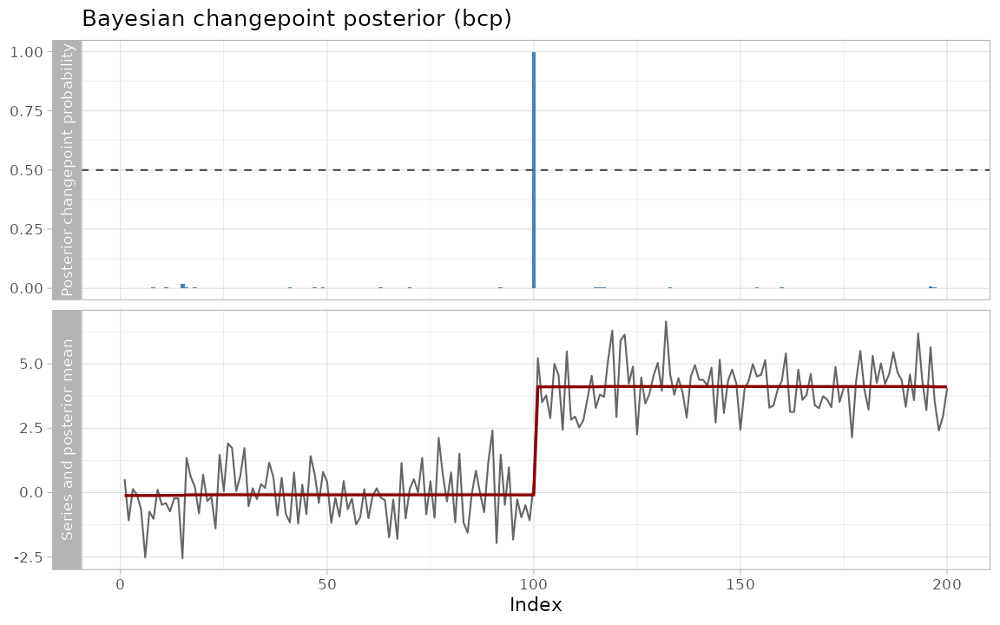
Bayesian online changepoint detection (Adams and MacKay 2007) instead tracks the posterior over the current run length — the time elapsed since the last change — updating it recursively as each observation arrives. Its signature graphic is the run-length heatmap, in which a change shows up as the posterior mass falling back to a run length of zero:
res_bocpd <- bocpd_wrapper(x_mean)
tidy(res_bocpd)
#> # A tibble: 1 × 2
#> cp cp_value
#> <int> <dbl>
#> 1 100 0.369
ggcpt_runlength(res_bocpd)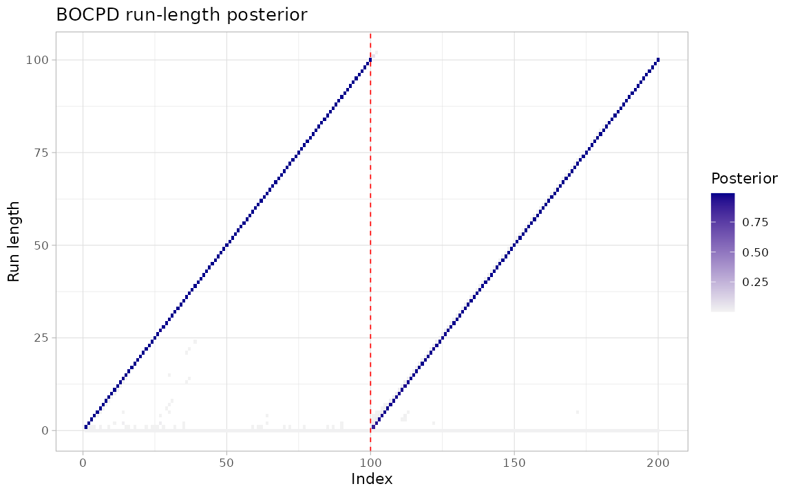
A third Bayesian engine, BEAST (Zhao et al. 2019) via
Rbeast, averages over models rather than conditioning
on one, and is wired as cpt_detect(x, method = "beast") (or
beast_wrapper()); it too reports
posterior_prob and renders with
ggcpt_posterior().
Nonparametric and sequential detection
When no parametric form is trustworthy, the nonparametric cost approach of changepoint.np (Haynes et al. 2017) and the energy-statistics E-Divisive of ecp (Matteson and James 2014; James and Matteson 2014) detect general distributional change:
set.seed(2022)
tidy(cpt_detect(x_mean, method = "np"))
#> # A tibble: 1 × 2
#> cp cp_value
#> <int> <dbl>
#> 1 100 0.369
tidy(cpt_detect(x_mean, method = "ecp", seed = 1))
#> # A tibble: 1 × 2
#> cp cp_value
#> <int> <dbl>
#> 1 100 0.369The cpm package (Ross
2015) recasts detection as a stream of two-sample tests
(Mann–Whitney for location, Mood for scale, Lepage, Kolmogorov–Smirnov,
Cramér–von Mises, and parametric variants), run here over the whole
series in one pass to mimic an online monitor. Its results distinguish
where a change happened (cp) from when it was
detected (detection_time), the lag inherent in
sequential monitoring:
tidy(cpm_wrapper(x_mean, cpm_type = "Mann-Whitney"))
#> # A tibble: 3 × 3
#> cp cp_value detection_time
#> <int> <dbl> <int>
#> 1 23 -1.39 30
#> 2 50 0.426 67
#> 3 100 0.369 104Three further nonparametric engines are wired and worth knowing:
kernel change-point analysis on running statistics
(kcp_wrapper(), engine kcpRS), which
detects changes in running means, variances, autocorrelations, or
correlations (Arlot et al. 2019; Cabrieto et al.
2018); NP-MOJO (npmojo_wrapper(), engine
CptNonPar), which detects changes in the marginal or
lagged joint distribution while remaining valid under serial dependence
(McGonigle and Cho 2025); and
self-normalised segmentation (sn_wrapper(), engine
SNSeg), which avoids long-run variance estimation
altogether and tests changes in means, variances, autocorrelations, or
bivariate correlations (Zhao et al.
2022).
Robustness to drift, autocorrelation, and model ambiguity
The most common failure of mean-change detection in practice is not a subtle statistical one: it is running a Gaussian-mean detector on data whose baseline drifts or whose noise is autocorrelated, and then reporting a changepoint wherever the model is wrong. DeCAFS (Romano et al. 2022) models exactly this regime — abrupt changes superimposed on random-walk drift and AR(1) noise — and separates the two:
res_decafs <- decafs_wrapper(x_mean)
tidy(res_decafs)
#> # A tibble: 1 × 2
#> cp cp_value
#> <int> <dbl>
#> 1 100 0.369
autoplot(res_decafs, show_fit = TRUE)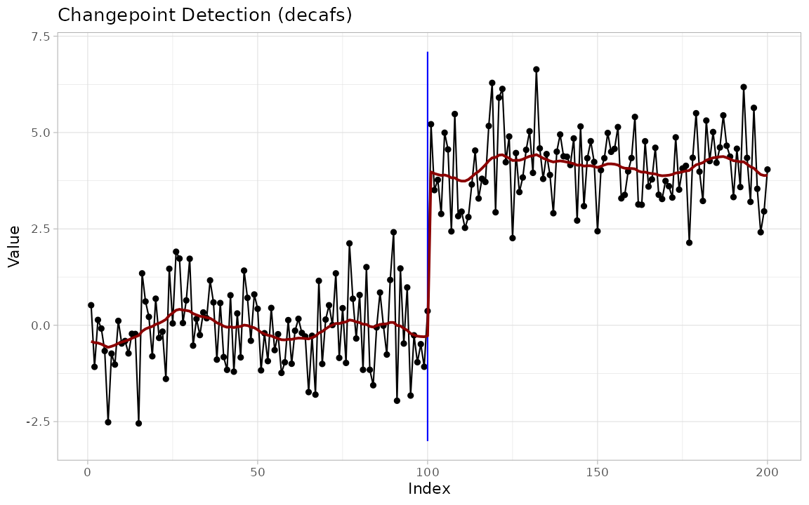
EnvCpt (Beaulieu and Killick 2018) attacks the same confusion by model selection: it fits up to twelve competing descriptions — constant mean or linear trend, each with or without changepoints, and with white-noise, AR(1) or AR(2) errors — and reports changepoints only if a changepoint model wins on an information criterion:
res_env <- envcpt_wrapper(x_mean, models = c("mean", "meancpt", "trendcpt"))
glance(res_env)
#> # A tibble: 1 × 9
#> n n_changepoints method change_in penalty_type penalty_value cp_convention
#> <int> <int> <chr> <chr> <chr> <dbl> <chr>
#> 1 200 1 envcpt mean AIC: meancpt 568. left
#> # ℹ 2 more variables: total_cost <dbl>, runtime <dbl>The winning model’s name is recorded in the penalty descriptor
(penalty_type above, here AIC: meancpt), so
“no changepoints, it’s just autocorrelation” is a first-class
answer.
Multivariate and high-dimensional detection
Multivariate methods accept a matrix (rows are time points) directly.
The energy-statistics E-Divisive of ecp was built for
this (Matteson and James 2014); for
high-dimensional data whose change is confined to a sparse subset of
coordinates, inspect (Wang and
Samworth 2018) finds an optimal sparse projection of the CUSUM
matrix and reports the projected evidence (strength).
Multivariate results render as faceted small-multiples with shared
changepoint rules:
set.seed(2026)
X <- cbind(a = c(rnorm(80), rnorm(80, 3)),
b = c(rnorm(80), rnorm(80, -2)),
c = rnorm(160))
res_hd <- inspect_wrapper(X)
tidy(res_hd)
#> # A tibble: 1 × 3
#> cp cp_value strength
#> <int> <dbl> <dbl>
#> 1 80 0.785 21.9
autoplot(res_hd)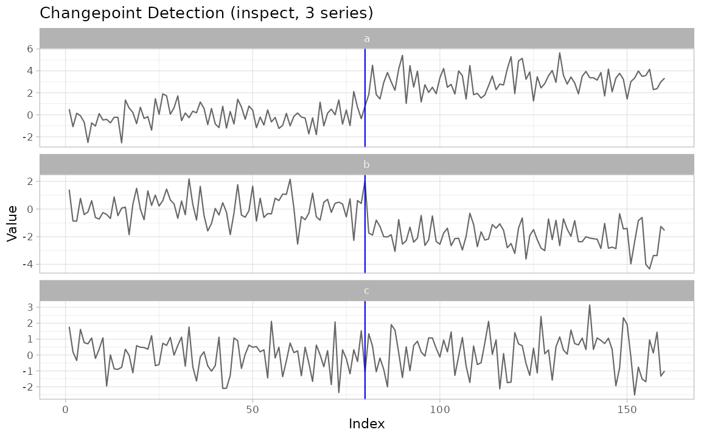
Two further engines complete the family.
geomcp_wrapper() (engine changepoint.geo)
maps each observation to its distance from and its angle to a reference
point, then segments the two mapped series, catching changes in
magnitude and in orientation respectively (Grundy
et al. 2020). And ocd_wrapper() (engine
ocd) monitors a high-dimensional stream online
with worst-case detection-delay guarantees (Chen
et al. 2022). Because detection there is sequential, the
locations it reports are declaration times — the change plus
the detection delay — recorded in declared_at; the wrapper
estimates the pre-change baseline from an initial training window and
resets after each declaration so that several changes can be found. Like
the method itself, it needs at least two coordinates and refuses a
single series.
Structural breaks in regression
Econometric practice dates breaks in regression coefficients. The Bai–Perron estimator (Bai and Perron 1998, 2003), via strucchange (Zeileis et al. 2002), returns break dates with confidence intervals; called on a bare series it dates mean shifts, and called with a formula it dates breaks in arbitrary regressions:
res_bp <- strucchange_wrapper(x_mean)
tidy(res_bp)
#> # A tibble: 1 × 4
#> cp cp_value ci_lower ci_upper
#> <int> <dbl> <int> <int>
#> 1 100 0.369 99 101
autoplot(res_bp, show_ci = TRUE)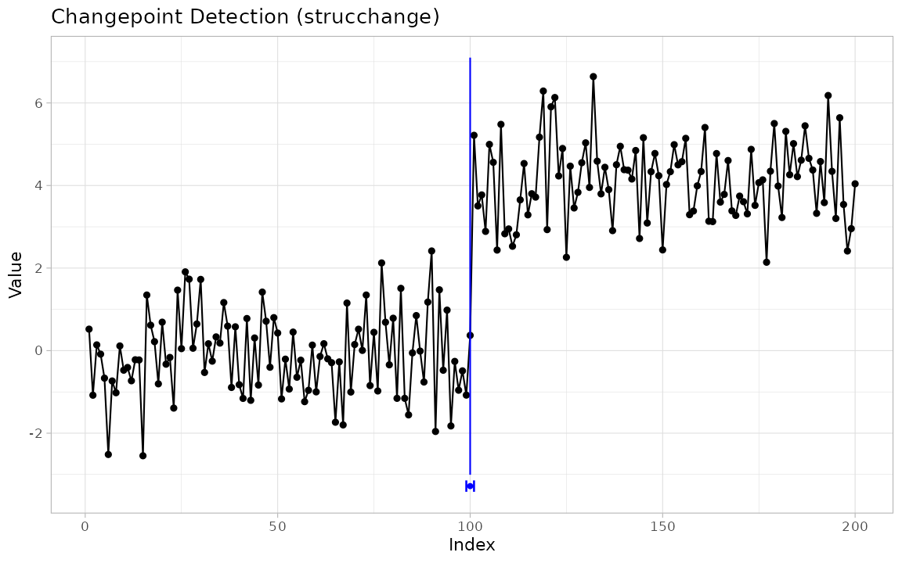
Where the regression function is continuous — a kink rather than a jump — segmented (Muggeo 2003, 2008) estimates broken-line relationships with standard errors for the breakpoints:
res_seg <- segmented_wrapper(x_slope, npsi = 1, seed = 1)
tidy(res_seg)
#> # A tibble: 1 × 4
#> cp cp_value ci_lower ci_upper
#> <int> <dbl> <int> <int>
#> 1 100 38.6 98 101
autoplot(res_seg, show_fit = TRUE, show_ci = TRUE)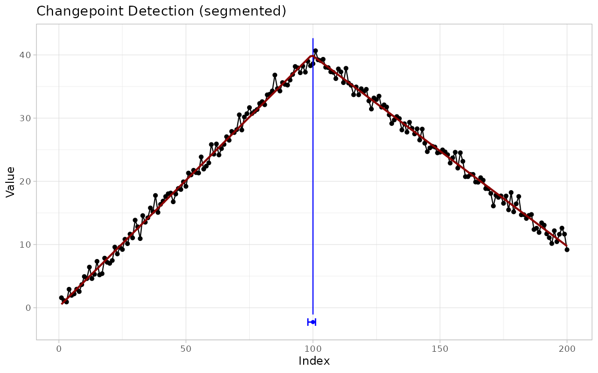
Beyond detection
Batch detection over many series
Applied work rarely stops at one series. cpt_batch()
runs one detector over every column of a matrix or data frame (or every
element of a list) and returns a tibble with one row per series,
carrying both the tidy changepoints and the full ggcpt
object in list-columns. With future and
future.apply installed it honours a non-sequential
future::plan(), using parallel-safe RNG:
set.seed(2026)
panel <- cbind(shifted = x_mean, quiet = rnorm(200))
batch <- cpt_batch(panel, method = "pelt")
batch
#> ggcpt_batch (2 series, method: pelt)
#>
#> # A tibble: 2 × 2
#> series n_changepoints
#> <chr> <int>
#> 1 shifted 1
#> 2 quiet 0
tidy(batch)
#> # A tibble: 1 × 3
#> series cp cp_value
#> <chr> <int> <dbl>
#> 1 shifted 100 0.369
autoplot(batch)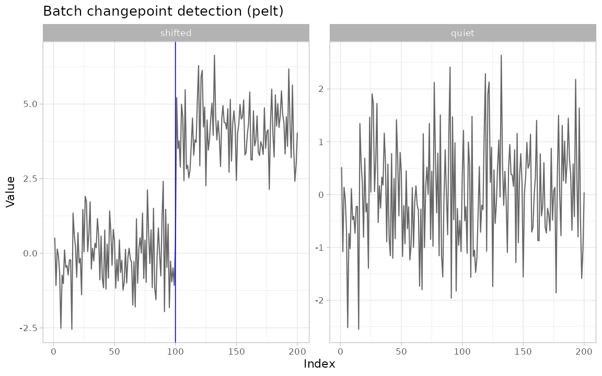
Stability diagnostics
Most engines report a point set with no measure of its fragility.
cpt_stability() resamples residuals within the
fitted segments — so the estimated regime structure is preserved —
re-runs the detector on each replicate, and reports how often each
location is re-detected: a cheap, model-agnostic confidence signal
available for every engine, including the many that ship no
intervals of their own:
st <- cpt_stability(x_mean, method = "pelt", B = 50, seed = 1)
st
#> ggcpt_stability (50 bootstrap replicates, method: pelt)
#>
#> Original changepoints and their re-detection frequency:
#> # A tibble: 1 × 2
#> cp stability
#> <int> <dbl>
#> 1 100 1
autoplot(st)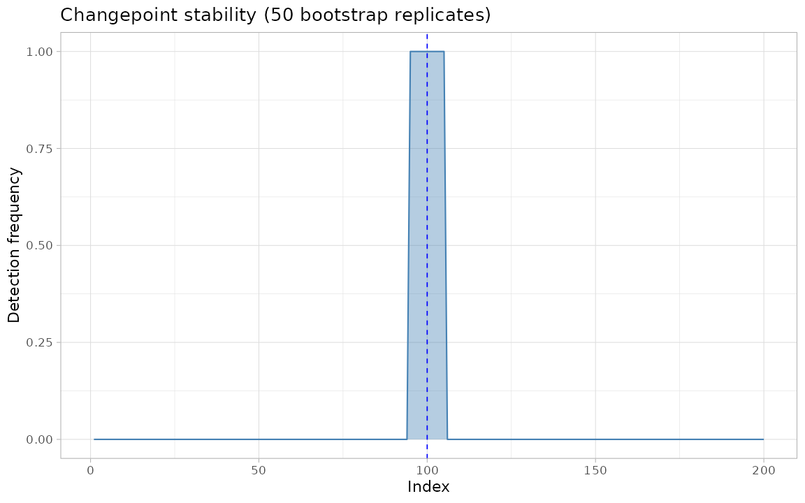
Evaluation, interactivity, and citations
When ground truth is known, cpt_metrics() computes
precision, recall and F1 under one-to-one matching, the covering metric,
Hausdorff distance, and adjusted Rand index, following the conventions
of the modern benchmarking literature (van den Burg and Williams 2020);
ggcpt_eval() draws the agreement, and
ggcpt_compare() juxtaposes methods. These are the subject
of the companion vignette
vignette("comparison", package = "ggchangepoint").
Any result renders as an interactive HTML widget with
ggcpt_interactive(res) (engine plotly, in
Suggests); the static autoplot() path is
untouched.
Finally, because every method here is someone’s published work,
cpt_cite() returns the reference(s) behind a result, so
analyses can cite the right paper without leaving R:
cpt_cite("pelt")
#> [pelt] Killick, R., Fearnhead, P. and Eckley, I. A. (2012). Optimal detection of changepoints with a linear computational cost. Journal of the American Statistical Association, 107(500), 1590-1598.Discussion
ggchangepoint does not contribute a new detection algorithm; it
contributes a surface. The value of a common contract compounds
with the number of methods behind it: the same tidy()
pipeline, the same plot, and the same evaluation code now span
penalised, multiscale, nonparametric, Bayesian, high-dimensional, and
regression-based detection — 31 methods in this release. Four more,
whose engines are not currently on CRAN (graph-constrained gfpop (Hocking et al. 2020), robust segmentation under
outliers (Fearnhead and Rigaill 2019),
FOCuS, and sparsified binary segmentation), are listed as
planned in cpt_methods() and will slot into the
same wrapper pattern once their engines return; until then they are not
callable.
Two practical notes. First, wrapped engines run with sensible
defaults, but every wrapper forwards ... to its engine and
the raw fit is always in $fit — the package is a front
door, not a cage. Second, detection quality belongs to the engines; the
package’s own additions (metrics, stability, penalty paths) are
deliberately engine-agnostic, so conclusions drawn with them transfer
between methods.
Acknowledgements
This package stands on the shoulders of the authors of the wrapped engines and of the R (R Core Team 2024), ggplot2 (Wickham 2016), and broom (Robinson 2017) projects.